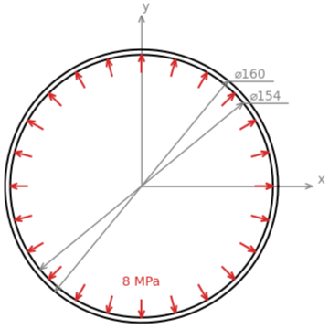
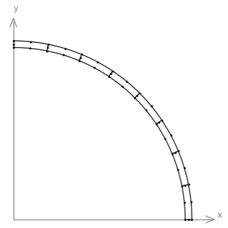

FEAPACK Examples
Basic example #1: Pipe under internal pressure.
Consider a pipe subjected to a uniform internal pressure with the following cross-section:
The geometry of the pipe is defined by an outer diameter of 160 mm, an internal diameter of 154 mm (material thickness of 3 mm), and a length of 1 m. The pipe is made of steel, which is considered elastic, homogeneous, and isotropic. The material is defined by a Young's modulus of 210 GPa and a Poisson's ration of 0.3. The internal pressure has a magnitude of 8 MPa. The objective is to perform a static analysis in order to understand if the pipe can handle the internal pressure. A plane strain condition is assumed. Note: due to the pipe symmetry, only 1/4 of the geometry needs to be modelled.
Consistent units: below, the geometry will be defined in mm, whereas the Young's modulus and pressure are defined in MPa. Consequently, results are computed in N (forces), mm (displacements), mm/mm (strains), and MPa (stresses).
The FEAPACK files for this example can be found here.
Solution via FEAPACK:
Start by creating a job script named basic1.py and import the following modules:
import math
import feapack.model
import feapack.solver
For this simple problem, a mesh can be created manually:
The mesh consists of 43 nodes and 8 Plane8 elements (two-dimensional second-order interpolation elements with 8 nodes):
# defining the mesh
nodeData = (
(77.0000, 0.0000, 0.0), # 0
(80.0000, 0.0000, 0.0), # 1
(75.5205, 15.0220, 0.0), # 2
(78.4628, 15.6072, 0.0), # 3
(71.1387, 29.4666, 0.0), # 4
(73.9104, 30.6147, 0.0), # 5
(64.0232, 42.7789, 0.0), # 6
(66.5176, 44.4456, 0.0), # 7
(54.4472, 54.4472, 0.0), # 8
(56.5685, 56.5685, 0.0), # 9
(42.7789, 64.0232, 0.0), # 10
(44.4456, 66.5176, 0.0), # 11
(29.4666, 71.1387, 0.0), # 12
(30.6147, 73.9104, 0.0), # 13
(15.0220, 75.5205, 0.0), # 14
(15.6072, 78.4628, 0.0), # 15
( 0.0000, 77.0000, 0.0), # 16
( 0.0000, 80.0000, 0.0), # 17
(78.5000, 0.0000, 0.0), # 18
(79.6148, 7.8414, 0.0), # 19
(76.9916, 15.3146, 0.0), # 20
(76.6292, 7.5473, 0.0), # 21
(76.5552, 23.2228, 0.0), # 22
(72.5245, 30.0406, 0.0), # 23
(73.6844, 22.3519, 0.0), # 24
(70.5537, 37.7117, 0.0), # 25
(65.2704, 43.6123, 0.0), # 26
(67.9079, 36.2975, 0.0), # 27
(61.8408, 50.7515, 0.0), # 28
(55.5079, 55.5079, 0.0), # 29
(59.5218, 48.8483, 0.0), # 30
(50.7515, 61.8408, 0.0), # 31
(43.6123, 65.2704, 0.0), # 32
(48.8483, 59.5218, 0.0), # 33
(37.7117, 70.5537, 0.0), # 34
(30.0406, 72.5245, 0.0), # 35
(36.2975, 67.9079, 0.0), # 36
(23.2228, 76.5552, 0.0), # 37
(15.3146, 76.9916, 0.0), # 38
(22.3519, 73.6844, 0.0), # 39
( 7.8414, 79.6148, 0.0), # 40
( 0.0000, 78.5000, 0.0), # 41
( 7.5473, 76.6292, 0.0), # 42
)
elementData = (
('Plane8', ( 0, 1, 3, 2, 18, 19, 20, 21)), # 0
('Plane8', ( 2, 3, 5, 4, 20, 22, 23, 24)), # 1
('Plane8', ( 4, 5, 7, 6, 23, 25, 26, 27)), # 2
('Plane8', ( 6, 7, 9, 8, 26, 28, 29, 30)), # 3
('Plane8', ( 8, 9, 11, 10, 29, 31, 32, 33)), # 4
('Plane8', (10, 11, 13, 12, 32, 34, 35, 36)), # 5
('Plane8', (12, 13, 15, 14, 35, 37, 38, 39)), # 6
('Plane8', (14, 15, 17, 16, 38, 40, 41, 42)), # 7
)
mesh = feapack.model.Mesh(nodeData, elementData)
With the mesh defined, create a new model database (MDB):
# create model database (MDB)
mdb = feapack.model.MDB(mesh)
Create the following sets:
# create node sets
mdb.nodeSet(name='nodes at x=0', indices=(node.index for node in mdb.mesh.nodes if node.x == 0.0))
mdb.nodeSet(name='nodes at y=0', indices=(node.index for node in mdb.mesh.nodes if node.y == 0.0))
mdb.nodeSet(name='nodes at r=77', indices=(node.index for node in mdb.mesh.nodes if abs(math.sqrt(node.x**2 + node.y**2) - 77.0) <= 0.001))
# create element set
mdb.elementSet(name='all elements', indices=range(mdb.mesh.elementCount))
# create surface set
mdb.surfaceSet(name='internal surface', surfaceNodes='nodes at r=77')
The node sets 'nodes at x=0' and 'nodes at y=0' are used below to apply the boundary conditions arising from the symmetries along the x and y axes, respectively. The node set 'nodes at r=77' is used to create the surface set 'internal surface'. To select the nodes coinciding with the internal surface, a polar coordinate system is used along with the Pythagorean theorem (a tolerance is used to account for round-off errors). The element set 'all elements' contains all elements and is used for the section assignments. Finally, the surface set 'internal surface' contains all element surfaces that form the internal pipe surface, and this set is used for the pressure application.
The next step is to define the material and section assignments:
# create material and section
mdb.material(name='steel', young=210000.0, poisson=0.3)
mdb.section(
name='steel section',
region='all elements',
material='steel',
type=feapack.model.SectionTypes.PlaneStrain, # or simply 'PlaneStrain'
thickness=1000.0,
reducedIntegration=False
)
Then we define the load and boundary conditions:
# create load
mdb.pressure(name='pressure load', region='internal surface', magnitude=8.0)
# create boundary conditions
mdb.boundaryCondition(name='x symmetry', region='nodes at x=0', u=0.0)
mdb.boundaryCondition(name='y symmetry', region='nodes at y=0', v=0.0)
Finally, we call the solver:
# solve
feapack.solver.solve(mdb, analysis='static')
To actually perform the finite element analysis, the following command is used: python basic1.py. The file basic1.out will be generated upon a successful run. Then, the viewer application can be launched using the following command: python -m feapack.viewer.
As a form of validation, here are the results via Abaqus using the comparable CPE8 element: